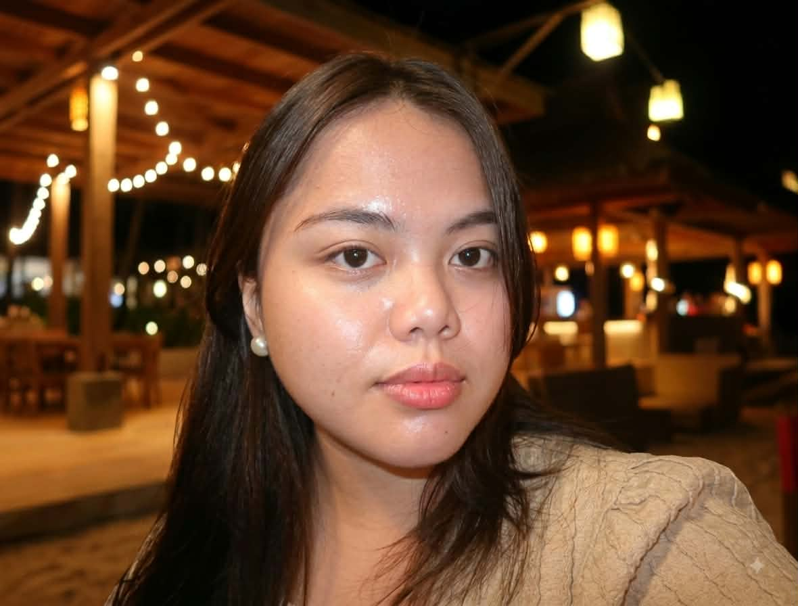

I am a Bachelor of Science in Information Systems student interested in creativity, technology, and personal growth.
My goal is to keep learning and create useful systems that make work easier and more organized.
Learn MoreI am a Bachelor of Science in Information Systems student who enjoys designing websites and prototypes. I am especially interested in UI/UX design, and I am also learning about system development.
As the CCIS Local Student Government Treasurer, I value transparency and responsible financial management. I also served for three years in the CSU Main ROTC Unit.
I want to keep learning, grow as a leader, and create useful systems that make work easier and more organized.